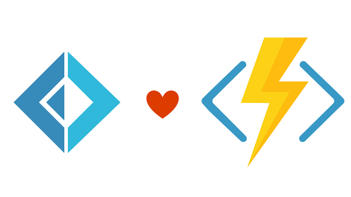
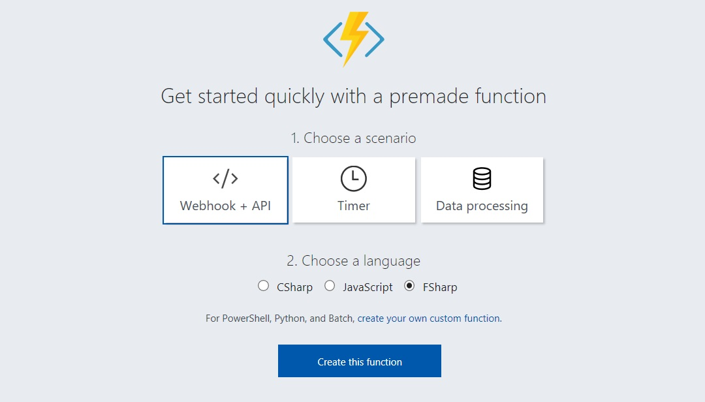
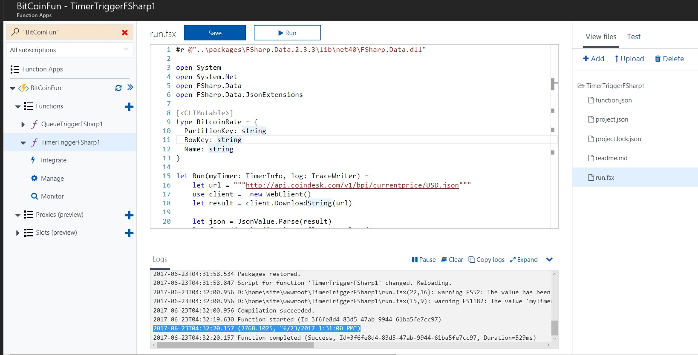
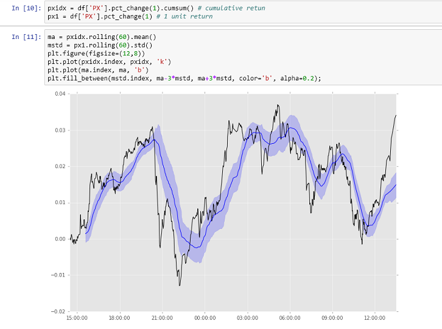

Multiple items
type CLIMutableAttribute =
inherit Attribute
new : unit -> CLIMutableAttribute
Full name: Microsoft.FSharp.Core.CLIMutableAttribute
--------------------
new : unit -> CLIMutableAttribute
type CLIMutableAttribute =
inherit Attribute
new : unit -> CLIMutableAttribute
Full name: Microsoft.FSharp.Core.CLIMutableAttribute
--------------------
new : unit -> CLIMutableAttribute
type BitcoinRate =
{PartitionKey: string;
RowKey: string;
Name: string;}
Full name: index.BitcoinRate
{PartitionKey: string;
RowKey: string;
Name: string;}
Full name: index.BitcoinRate
BitcoinRate.PartitionKey: string
Multiple items
val string : value:'T -> string
Full name: Microsoft.FSharp.Core.Operators.string
--------------------
type string = System.String
Full name: Microsoft.FSharp.Core.string
val string : value:'T -> string
Full name: Microsoft.FSharp.Core.Operators.string
--------------------
type string = System.String
Full name: Microsoft.FSharp.Core.string
BitcoinRate.RowKey: string
BitcoinRate.Name: string
val getBitCoinPx : unit -> BitcoinRate
Full name: index.getBitCoinPx
Full name: index.getBitCoinPx
val url : string
val client : System.IDisposable
val result : obj
val json : obj
val fx : obj
val time : obj
System.Object.ToString() : string
val Run : bitcoinRate:BitcoinRate * bitcoinOut:'a * log:'b -> 'c
Full name: index.Run
Full name: index.Run
val bitcoinRate : BitcoinRate
val bitcoinOut : 'a
val log : 'b
val sprintf : format:Printf.StringFormat<'T> -> 'T
Full name: Microsoft.FSharp.Core.ExtraTopLevelOperators.sprintf
Full name: Microsoft.FSharp.Core.ExtraTopLevelOperators.sprintf
Multiple items
module Set
from Microsoft.FSharp.Collections
--------------------
type Set<'T (requires comparison)> =
interface IComparable
interface IEnumerable
interface IEnumerable<'T>
interface ICollection<'T>
new : elements:seq<'T> -> Set<'T>
member Add : value:'T -> Set<'T>
member Contains : value:'T -> bool
override Equals : obj -> bool
member IsProperSubsetOf : otherSet:Set<'T> -> bool
member IsProperSupersetOf : otherSet:Set<'T> -> bool
...
Full name: Microsoft.FSharp.Collections.Set<_>
--------------------
new : elements:seq<'T> -> Set<'T>
module Set
from Microsoft.FSharp.Collections
--------------------
type Set<'T (requires comparison)> =
interface IComparable
interface IEnumerable
interface IEnumerable<'T>
interface ICollection<'T>
new : elements:seq<'T> -> Set<'T>
member Add : value:'T -> Set<'T>
member Contains : value:'T -> bool
override Equals : obj -> bool
member IsProperSubsetOf : otherSet:Set<'T> -> bool
member IsProperSupersetOf : otherSet:Set<'T> -> bool
...
Full name: Microsoft.FSharp.Collections.Set<_>
--------------------
new : elements:seq<'T> -> Set<'T>
val using : resource:'T -> action:('T -> 'U) -> 'U (requires 'T :> System.IDisposable)
Full name: Microsoft.FSharp.Core.Operators.using
Full name: Microsoft.FSharp.Core.Operators.using
Make today an easy day!

Less infrastructure + less code.
Serverless meets F# and Bitcoin

Azure Functions
- Great for short, non-memory intensive tasks that need to be triggered by:
timer, queue, http
- easy to hook up to webapps, and leverage storage on Azure, will auto-scale
- No need to set up a VM or maintain a server
- Out of the box support for F#, fsx and compiled code (upload your dll, reference nuget packages)
- Azure Functions are language agnostic but F# syntax is a natural fit
pipeline of small stateless functions
Super easy to get started


Show me the code
1: 2: 3: 4: 5: 6: 7: 8: 9: 10: 11: 12: 13: 14: 15: 16: 17: 18: 19: |
|
Azure will execute the .fsx file, so the exact same code will be running:

The return type of this function is unit -> BitcoinRate

Where does it go?
Our second Function: Azure table storage
1: 2: 3: 4: |
|

To summarize: with two small functions we built a small pipeline:
- Every x minutes go to the service
- Parse the JSON response and put it into a queue for further processing
- Store the result
Part 2: Azure Notebooks

Azure supports F#, Python and R in Jupyter Notebooks
so no need to run your own notebook server or to install F# or python
Python code below!
1: 2: 3: 4: 5: 6: 7: 8: 9: |
|
Essentially with one line of code we can access the data, and further process it
Literate Programming

Libraries/Tools/Resources
- All the .NET BCL and
-
Some personal picks
- F# Slack: Quite active and friendly
- Fable: F# to JavaScript (you can be proud of)
- FSharp.Data and SQLProvider: micro-ORM/typed data access
- Suave: an async micro web-server
- Paket: dependency management
- Fake: build tool
- Expecto: first-class tests
- MathNet.Numerics: numerical/statistical computations
- Gjallarhorn: managing mutable state and signals
- Oxyplot: plotting library
- Argu and CommandLine: command line parsers
- BenchmarkDotNet: easy micro benchmarking
- FileHelpers: processing delimited files
- Fake: F# Make, a build tool for .NET
- Integrated DSL in F#
- Run tests, add assembly info, release to nuget via Paket
- Paket: dependency manager for .NET
- Integrated with nuget but much more reliable
- Can reference source files, github
Resources
Coding in F#